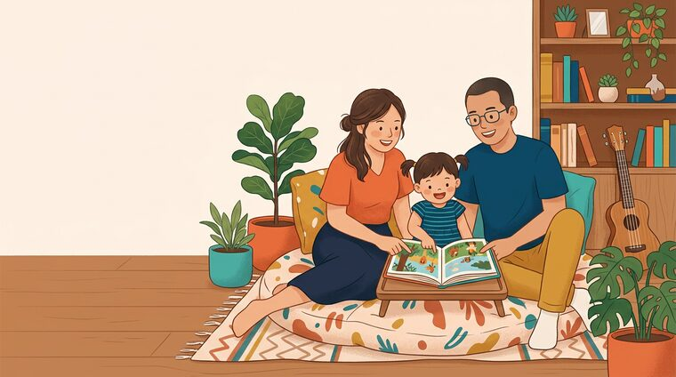

Penjelasan Produk · v1 · November 2026
Apa itu
MentariSmartParent?
Sebuah situs web untuk orang tua berisi artikel, video, dan tips pengasuhan anak yang ditulis bersama psikolog & dokter anak — yang menghubungkan topik yang sedang dibaca dengan produk-produk Mentari Group yang relevan.
Tidak perlu latar belakang teknis. Semua istilah dijelaskan di halaman 2.

Sebelum mulai
Enam istilah yang akan sering muncul
Kalau enam ini sudah jelas, sisa deck-nya gampang.
Frontend
(web / “tampilan”)
Bagian yang dilihat dan diklik pengguna di browser — halaman, tombol, gambar. Di proyek ini namanya apps/web.
Backend
(API / “mesin”)
Bagian yang tidak terlihat: memeriksa hak akses, menghitung rekomendasi, menyimpan data. Namanya apps/api.
Database
(“gudang data”)
Tempat semua data disimpan permanen: akun, artikel, produk, komentar. Ibarat lemari arsip raksasa yang tertata.
CMS
(panel admin)
Halaman khusus tim internal untuk menulis artikel dan mengatur produk tanpa perlu programmer. Alamatnya /admin.
Login / Peran
(role)
Akun punya “tingkat akses”: pengunjung, orang tua, editor, admin. Yang tidak berhak tidak bisa masuk.
API
(“pelayan pesanan”)
Jembatan resmi antara tampilan dan mesin. Tampilan memesan (“beri saya 4 artikel populer”), API mengantar datanya.
Frontend = ruang makan & menu · Backend = dapur · Database = kulkas & gudang bahan · API = pelayan yang membawa pesanan. Tamu tidak perlu masuk dapur — dan memang tidak boleh.
Kenapa ini dibuat
Orang tua mencari jawaban di internet yang tidak jelas siapa penulisnya
Sementara Mentari Group punya produk pendidikan yang bagus — tapi tidak punya alasan alami untuk “kenalan” dengan orang tua di momen mereka paling butuh.
Informasi berserakan & tidak terpercaya
Forum, grup chat, dan video pendek. Sumbernya sering tidak jelas, kadang bertentangan, dan tidak pernah menyebut dokter mana yang meninjau.
Nasihat parenting terasa “generik”
Tips untuk bayi 6 bulan dipakai untuk anak 6 tahun. Padahal kebutuhan tiap usia berbeda jauh — dan orang tua tahu itu.
Produk Mentari “dijual”, bukan “dibutuhkan”
Iklan buku dan kelas terasa mengganggu kalau muncul tanpa konteks. Yang dicari orang tua adalah solusi, bukan katalog.
Cara Mentari menjawab
Jadi “sahabat” dulu, baru “toko”
Beri ilmu yang benar-benar berguna dan gratis → orang tua percaya → ketika mereka butuh buku/kelas, rekomendasinya terasa membantu, bukan menjual.
Prinsipnya
Trust first,
commerce second.
Konten editorial tidak boleh dibayar oleh produk. Rekomendasi selalu diberi label.
Untuk siapa
Lima peran yang berbeda di dalam satu situs
Semua orang melihat situs yang sama — tapi yang bisa mereka lakukan berbeda-beda.
Tanpa akun
Pengunjung
Datang dari Google atau media sosial, sering lewat HP. 70–80% pengguna baru adalah tipe ini.
Bisa: baca semua konten, lihat katalog produk, baca komunitas.
Akun gratis
Orang tua
Sudah punya akun & profil anak. Ingin konten yang sesuai usia anaknya.
Bisa: semua di atas + bookmark, milestone, poin & badge, tulis di komunitas.
Tim internal
Editor
Menulis dan menerbitkan konten. Tidak boleh mengubah peran pengguna lain.
Bisa: kelola konten, produk, learning path, moderasi komunitas.
Tim internal
Admin
Semua akses editor + mengatur peran pengguna dan melihat angka performa.
Bisa: semua, termasuk jadikan seseorang editor/admin.
Segmen khusus
Guru
Target produk Teacher Academy. Tahun pertama fokus membaca, bukan menulis.
Saat ini: pengunjung / orang tua biasa.
Setiap tombol “berhasil” atau “ditolak” di situs selalu menjawab satu pertanyaan: “Siapa kamu?”. Kalau ada laporan “saya tidak bisa membuka halaman X”, pertanyaan pertama bukan bug — tapi peran akunnya apa.
Peta situs
Apa saja yang ada di dalam aplikasi
Semua halaman yang bisa dibuka, dikelompokkan menjadi lima area.
1 · Jelajah Konten
Daftar semua konten filter usia, kategori, tipe Halaman baca artikel/video + panel “Rekomendasi dari Mentari” Pencarian judul, ringkasan, penulis, tag2 · Belajar Terarah
Learning Path rangkaian konten berurutan Perkembangan (milestone) checklist sesuai usia anak Profil saya anak, poin, badge, bookmark3 · Komunitas
Forum diskusi orang tua thread, komentar, like Detail diskusi moderasi: pin, kunci, hapus5 · Area Internal (login wajib)
/admin — CMS: Ringkasan · Konten · Produk · Learning Path · Komunitas · Pengguna Hanya ADMIN & EDITOR. Tab “Pengguna” hanya ADMIN.+ Halaman pendukung
ℹ️ /about · /help (FAQ) · /privacy · /terms · /login · /register · /forgot-password Juga: peta situs otomatis untuk Google (/sitemap.xml) dan aturan robot (/robots.txt).Siapa boleh masuk ke mana
Semua pengunjung
Beranda · konten · pencarian · katalog produk · komunitas (baca) · halaman legal
Harus punya akun
Profil & data anak · milestone · bookmark · poin/badge · menulis diskusi & komentar · rekomendasi personal
Harus ADMIN / EDITOR
Seluruh /admin. Tab Pengguna hanya ADMIN — EDITOR tidak melihatnya sama sekali.
Cara kerja, versi 30 detik
Dari klik sampai data tersimpan
Contoh nyata: seorang ibu membuka artikel “Takaran MPASI”. Ini yang terjadi di belakang layar.
Kenapa penting
Semua orang tua memakai satu pintu yang sama (situs). Tidak ada aplikasi terpisah untuk iOS/Android — jadi satu perbaikan langsung terasa untuk semua pengguna.
Kenapa cepat
Halaman artikel disiapkan di server (bukan di HP pengguna), jadi cepat dibuka di jaringan lambat dan mudah ditemukan Google.
Kenapa aman
Browser pengguna tidak pernah menyentuh database langsung. Semua permintaan lewat API yang memeriksa izin lebih dulu.
Terjemahan untuk tim non-teknis
Kalau ada yang bertanya “kenapa perubahan kecil butuh waktu?” — jawabannya ada di gambar di atas. Mengubah tampilan tidak menyentuh data. Mengubah aturan rekomendasi tidak menyentuh tampilan. Tapi mengubah jenis data yang disimpan menyentuh ketiganya.
URUTAN PERUBAHAN
Tampilan → cepat · Mesin → sedang · Data → paling lama
Alur pemakaian pengguna
Perjalanan seorang orang tua, dari tidak kenal sampai jadi kebiasaan
Titik putus terbesar
Antara tahap 2 dan 3. Banyak orang tua tidak melihat alasan untuk mendaftar karena semua konten sudah bisa dibaca tanpa akun.
Jawabannya hari ini
Yang tidak bisa dilakukan tanpa akun: profil anak, milestone, bookmark, poin & badge, menulis di komunitas.
Pesan untuk tim
Saat presentasi, ceritakan alur ini sebagai cerita satu orang, bukan daftar fitur. Orang mengingat cerita, bukan menu.
Alur masuk
Ada tiga pintu masuk, bukan satu
Ini yang sering terlewat saat menjelaskan produk: pengguna tidak selalu “mulai dari beranda”.
Pintu 1 — Google
Mencari “takaran MPASI 6 bulan”, mendarat langsung di artikel. Beranda tidak pernah dilihat.
Implikasi: setiap halaman artikel harus bisa berdiri sendiri — judul, ringkasan, gambar, penulis.
Pintu 2 — Media sosial
Link dibagikan di grup WhatsApp atau Instagram. Yang dibuka satu halaman, sering di HP dengan koneksi pas-pasan.
Implikasi: tampilan HP adalah tampilan utama — bukan versi “mini” dari desktop.
Pintu 3 — Beranda
Membuka alamat situs langsung. Melihat sorotan: konten populer, topik, learning path, produk, komunitas.
Implikasi: beranda berfungsi sebagai “etalase” untuk yang sudah kenal.
Cara menjelaskan ke orang awam
“Bayangkan sebuah majalah parenting. Orang bisa menemukan satu halaman majalah itu lewat Google, tanpa pernah melihat sampulnya. Tugas kami: memastikan setiap halaman tetap masuk akal sendirian — dan selalu ada jalan kembali ke bagian lain.”
Alur 1 dari 6
Daftar, masuk, dan lupa password
Daftar akun
Isi nama lengkap, email, password. Langsung dapat badge “Langkah Pertama” (10 poin) sebagai penyambut.
Halaman /register
Masuk & streak harian
Tiap login di hari baru menambah streak dan 5 poin. Streak 7 dan 30 hari memberi badge khusus.
Halaman /login
Lupa password
Isi email, sistem menjawab “jika email terdaftar, tautan reset sudah dikirim” — sengaja tidak membocorkan email mana yang terdaftar.
Halaman /forgot-password
Kenapa alurnya dibuat begini
- Tidak ada verifikasi email yang memblokir — bisa langsung pakai. (Email verifikasi = calon pengguna kabur.)
- Password disamarkan & tidak pernah disimpan mentah — yang tersimpan hanya “sidik jari” (hash) yang tidak bisa dibalik.
- Pesan “email tidak ditemukan” tidak ditampilkan — mencegah orang menebak email pelanggan lain.
Saat ini halaman lupa password belum benar-benar mengirim email — baru mencatat permintaan di server. Pengiriman email reset perlu disiapkan (lewat penyedia email atau layanan login seperti Supabase).
Alur 2 dari 6 · inti produk
Menemukan dan membaca konten
Yang bisa disaring di halaman konten
Kelompok usia
Bayi 0–12 bln · Batita 1–3 th · Prasekolah 3–6 th · SD Awal 6–9 th · SD Akhir 9–12 th · Semua usia
Kategori
Nutrisi & Kesehatan · Tumbuh Kembang · Pendidikan · Aktivitas · Psikologi Anak · Parenting Tips · Digital & Teknologi
Tipe konten
Video · Artikel · Infografis · Tips · Aktivitas
Urutan
Terbaru atau terpopuler
Kunci yang sering ditanyakan
Berapa sih jumlah kontennya?
Data contoh saat ini: 25 konten, 7 produk, 23 milestone, 2 learning path, 10 badge.
Target jangka panjang yang ditulis di situs: 250+ konten.
Alur 3 dari 6 · nilai bisnis utama
Bagaimana produk Mentari dipilih untuk ditampilkan
Bukan iklan acak dan bukan “yang bayar paling banyak”. Ada urutan tiga tingkat yang jelas.
Dikurasi manual
Tim editorial menentukan: “artikel ini cocoknya dengan buku ini”, plus skor relevansi 0–1.
Kontrol penuh. Ini yang dipakai dulu kalau ada.
Cocok kelompok usia
Kalau belum ada kurasi, sistem mencari produk yang menyasar usia sama dengan isi artikel.
Otomatis, tanpa campur tangan tim.
Produk unggulan
Kalau dua cara di atas tidak menghasilkan apa pun, tampilkan produk yang ditandai “unggulan”.
Jaring pengaman agar panel tidak kosong.
Aturan main yang tidak boleh dilanggar
- Selalu berlabel “Rekomendasi dari Mentari” + tanda Sponsored. Tidak menyamar jadi artikel.
- Tidak menampilkan harga — keputusan produk: harga membuat orang berhenti membaca.
- Hanya di satu tempat (kolom kanan artikel) — dulu sempat muncul di tengah artikel, lalu dihapus agar tidak mengganggu.
- Klik dicatat beserta asalnya (dari konten mana, posisi mana) untuk mengukur relevansi.
Contoh nyata di layar
Membaca “Takaran MPASI 6–24 Bulan” → panel menampilkan buku aktivitas anak & produk digital learning untuk usia balita.
Membaca “Checklist Persiapan Masuk SD” → menampilkan Buku Tematik SD & Cambridge Primary English.
◉ REKOMENDASI DARI MENTARI SPONSORED
Kelas 1–6
Platform
Alur 4 dari 6
Profil anak: satu data, banyak manfaat
Hanya butuh nama panggilan + tanggal lahir. Dari situ sistem menghitung usia dan menyesuaikan seluruh pengalaman.
Data yang diisi
contoh: Aisha
untuk menghitung usia & kelompok
opsional, boleh dikosongkan
Bisa menambahkan lebih dari satu anak. Setiap anak punya progres sendiri.
Usia dihitung otomatis
Tanggal lahir → usia dalam bulan → kelompok usia:
Usia bertambah tiap bulan — kelompoknya ikut berpindah sendiri, tanpa perlu diubah manual.
Yang ikut menyesuaikan
- Ceklis milestone yang relevan untuk usianya
- Rekomendasi produk yang lebih tepat sasaran
- Saran konten yang tidak “terlalu bayi” atau “terlalu besar”
Data anak tidak dijual dan tidak dipakai untuk iklan bertarget. Bisa dihapus kapan saja.
Jawaban siap pakai: “Data anak hanya terlihat oleh pemilik akun, tidak dipakai untuk iklan, dan bisa dihapus sendiri dari halaman Profil kapan saja.” Ini tertulis di Kebijakan Privasi.
Nama panggilan + tanggal lahir. Tidak ada NIK, tidak ada foto, tidak ada alamat — sengaja seminimal mungkin.
Tidak perlu diperbarui manual. Anak yang hari ini batita akan otomatis pindah ke prasekolah saat ulang tahunnya.
Alur 5 dari 6
Milestone: “apakah anak saya normal?”
Ini fitur yang paling sering membuat orang tua kembali ke situs — bukan sekadar membaca lalu pergi.
Cara kerjanya
23 milestone, 5 area perkembangan
Contoh: “Mengucapkan minimal 10 kata bermakna” (batita) · “Membaca kalimat sederhana dengan lancar” (SD awal).
Tanda perlu konsultasi
2 tahun belum bisa merangkai 2 kata → konsultasikan ke dokter anak.
Ilustrasi tampilan — bukan tangkapan layar. Isi teks diambil dari data aplikasi.
Alur 6 dari 6
Learning Path: dari “baca sana-sini” jadi “ikut kurikulum”
Masalah yang dipecahkan
25 artikel terpisah itu melelahkan. Orang tua tidak tahu urutan membacanya: mana dulu, mana setelahnya, kapan selesai.
Solusinya
Konten dikelompokkan menjadi jalur berurutan dengan estimasi waktu. Setiap modul yang dibuka menambah progres — jadi terasa seperti menyelesaikan sesuatu, bukan mengembara.
Kenapa ini penting untuk bisnis
Learning path adalah “paket” alami. Satu topik besar (mis. persiapan masuk SD) membutuhkan produk yang lebih spesifik — dan rekomendasinya jadi lebih mudah dijelaskan.
Persiapan Anak Masuk SD
6 modul · ±90 menit total
Ilustrasi tampilan. Judul modul & durasi diambil dari data aplikasi.
Alur pendukung
Poin, streak, dan badge: bikin balik lagi
Bukan game anak-anak — ini alat retensi. Tujuannya satu: membuat kebiasaan membaca terbentuk.
130poin terkumpul
+5 dari login harian, +15 dari membuat diskusi
7hari beruntun
Badge di hari ke-7 dan ke-30
3badge dimiliki
dari 10 badge yang tersedia
Lv 3level
tampil di halaman profil
Bagaimana poin dan badge didapat
| Aksi | Hadiah | Otomatis? |
|---|---|---|
| Mendaftar akun | Badge “Langkah Pertama” · 10 poin | Ya |
| Login di hari baru | +5 poin & streak bertambah | Ya |
| Membuat diskusi di komunitas | +15 poin | Ya |
| Menyimpan 10 konten | Badge “Penjaga Bookmark” | Ya |
| Komentar di komunitas | Badge “Kontributor Komunitas” | Ya |
Jujur soal statusnya
Poin, streak, dan badge berfungsi. Tapi beberapa badge di katalog (mis. “Pembaca Setia”) baru diberikan lewat data contoh — belum tentu terpicu otomatis saat dipakai sungguhan.
Jangan menjanjikan semua badge otomatis sebelum dicek.
Alur pendukung
Komunitas: tempat orang tua saling menjawab
Forum sederhana: buat diskusi, balas, beri “suka”. Tanpa fitur berlebihan — fokus pada rasa aman.
Buat diskusi
Judul + isi + pilih kategori (gizi, kesehatan, kurikulum, screen time, dll). Wajib login.
Balas & dukung
Komentar bisa dibalas berjenjang. Tombol “suka” menandai jawaban yang membantu.
Tim menjaga
Admin/editor bisa sematkan diskusi penting, kunci yang memanas, dan hapus yang melanggar.
Tiga lapis pengamanan
- Filter kata kasar (Indonesia + Inggris). Kata tidak pantas disamarkan jadi bintang di tampilan publik; teks aslinya tetap tersimpan untuk moderator.
- Thread bisa dikunci. Setelah dikunci, tidak ada komentar baru yang masuk — mencegah debat berlarut.
- Moderasi manual dari panel admin: sematkan, kunci, hapus diskusi/komentar.
Contoh diskusi yang hidup di data
“Anak 2 tahun pilih-pilih makan — wajar nggak sih?”
23 suka · 3 balasan · #gizi-anak
“Tips lepas diaper di malam hari?”
31 suka · 2 balasan · #kesehatan-fisik
“Rekomendasi sekolah: nasional vs internasional?”
disematkan admin · 45 suka
Forum membuat orang datang berkali-kali tanpa perlu konten baru. Konten butuh biaya produksi; percakapan pengguna tumbuh sendiri — asal ada yang menjaga.
Sisi bisnis
Dari artikel ke produk: perjalanan satu klik
Situs ini bukan toko. Tidak ada pembayaran di dalamnya. Tugasnya mengantar orang ke tempat yang tepat.
Tujuh jenis produk Mentari
Buku Tematik SD 1–6
Cambridge Primary English
Seri Dongeng Nusantara
Platform belajar 1 tahun
Tes kemampuan bahasa Inggris
Pelatihan guru PAUD
Buku Aktivitas Anak Kreatif (3–6 tahun)
Apa yang bisa dan tidak bisa dilakukan
| Bisa | Katalog & detail produk, klik ke situs Mentari, lacak klik |
| Belum | Keranjang, pembayaran, ongkir, riwayat pesanan |
| Sengaja | Harga tidak tampil di panel rekomendasi |
Kalau ada yang bertanya “bisa checkout di sini?” — jawabannya sekarang: belum, dan memang belum dirancang untuk itu.
Di belakang layar
Panel admin: dapur tempat tim bekerja
Alamat /admin. Tidak terlihat pengunjung dan tidak diindeks Google. Login dengan akun ADMIN atau EDITOR.
6 angka utama, grafik views 14 hari, konten terpopuler, produk paling diklik.
Cari & filter per status. Buat konten baru, ubah status Terbit / Draft / Arsip dalam satu klik.
Tambah/edit produk, tandai unggulan, hapus lunak (bisa dipulihkan).
Buat jalur belajar dan susun modul-modulnya sesuai urutan yang diinginkan.
Sematkan diskusi penting, kunci yang memanas, hapus konten melanggar.
Lihat daftar akun dan ubah peran (mis. jadikan seseorang EDITOR). Tab ini tidak muncul untuk EDITOR.
Form konten di panel admin saat ini ringkas: judul, tipe, ringkasan, isi, kategori, status. Pengaturan usia, tag, thumbnail, dan penulis lengkap masih lewat jalur lain (data awal / API).
“Ini meja kerja tim, bukan halaman pelanggan. Kalau ingin mengubah apa yang dilihat orang tua, hampir selalu mulai dari sini.”
Alur kerja harian tim konten
1 · Tulis
Buat konten di tab Konten (judul, tipe, isi, kategori)
2 · Simpan sebagai draft
Belum terlihat publik, bisa direvisi
3 · Terbitkan
Satu klik → langsung tampil di situs
4 · Pantau
Lihat views-nya di tab Ringkasan
Data & laporan
Angka apa yang kita punya (dan tidak punya)
Yang sudah tercatat otomatis
Setiap halaman artikel dibuka = 1 view. Ada juga catatan per hari untuk grafik.
Produk apa, dari artikel mana, dari posisi mana (sidebar/banner).
Untuk melihat seberapa dalam pengguna memakai produk.
Jumlah diskusi, komentar, suka, dan views diskusi.
Bentuk laporannya di panel admin
718views 30 hari
48klik produk
8pengguna
Grafik views 14 hari (ilustrasi bentuk). Angka di kiri adalah data contoh yang benar-benar ada di sistem saat ini.
Laporan konversi penjualan (karena tidak ada transaksi di sini), data demografi pengguna, A/B testing, dan dashboard “funnel” dari kunjungan sampai pembelian.
Di balik layar, versi awam
“Kenapa harus ada tiga bagian?”
Pertanyaan wajar dari tim non-teknis. Jawabannya selalu kembali ke keamanan, kecepatan, dan kemudahan mengubah.
Tampilan (Next.js)
Menyusun halaman yang dilihat orang. Bisa dua bahasa (Indonesia & Inggris), tampilan HP diutamakan, dan disiapkan agar mudah ditemukan Google.
Diubah saat: mengubah desain, teks tombol, susunan halaman.
Mesin (NestJS)
Aturan main: siapa boleh apa, logika rekomendasi produk, pencatatan views & klik, pencarian, moderasi.
Diubah saat: menambah fitur baru atau mengubah aturan bisnis.
Gudang data (database)
Menyimpan 20 jenis data: pengguna, anak, konten, produk, relasi konten–produk, bookmark, milestone, badge, diskusi, dan statistik.
Diubah saat: butuh menyimpan jenis informasi baru.
Analogi yang paling gampang dipakai saat presentasi
Restoran. Ruang makan & menu = tampilan. Dapur = mesin. Kulkas & gudang bahan = database. Pelayan yang membawa pesanan = API. Pelanggan tidak pernah masuk dapur — dan itu justru membuat semuanya aman dan rapi.
Kenapa dipisah?
- 1Ganti desain tanpa membongkar data
- 2Tambah fitur tanpa mengubah tampilan lama
- 3Data tidak bisa diakses langsung dari browser pengguna
Status hari ini
Apa yang sudah jalan, dan apa yang belum
Bagian ini penting: kalau presentasi menjanjikan hal yang belum ada, kepercayaan tim hilang.
| Fitur | Status |
|---|---|
| Baca konten + filter usia/kategori/tipe | ● jalan |
| Pencarian | ● jalan |
| Daftar, login, peran pengguna | ● jalan |
| Profil anak & milestone otomatis | ● jalan |
| Bookmark | ● jalan |
| Rekomendasi produk 3 tingkat | ● jalan |
| Learning path + progres | ● jalan |
| Komunitas + moderasi | ● jalan |
| Panel admin (konten, produk, pengguna) | ● jalan |
| Pencatatan views & klik produk | ● jalan |
| Fitur | Status |
|---|---|
| Email reset password | ● belum |
| Penyimpanan progres learning path | ● hanya di perangkat |
| Pemberian poin/badge dari membaca | ● sebagian |
| Naik level otomatis | ● belum |
| Buletin email mingguan | ● tampilan saja |
| Unggah gambar dari panel admin | ● belum |
| Keranjang & pembayaran | ● tidak dirancang |
| Tombol “laporkan” di komunitas | ● belum |
| Analitik konversi penjualan | ● belum |
| Notifikasi / email otomatis | ● belum |
Amunisi presentasi
Sepuluh kalimat siap pakai untuk menjelaskan produk
Pilih tiga yang paling cocok dengan audiens, jangan dibacakan semua.
1 · VERSI SATU KALIMAT
“Situs parenting berisi konten tervalidasi ahli, yang menghubungkan topik bacaan dengan produk Mentari yang relevan.”
2 · VERSI SATU MENIT
“Orang tua sering cari jawaban di internet yang tidak jelas sumbernya. Kami bikin tempat yang jelas: ditinjau psikolog dan dokter anak, gratis, dan disesuaikan dengan usia anak. Kalau mereka butuh produk, kami rekomendasikan produk Mentari dengan label jelas.”
3 · UNTUK MANAJEMEN
“Ini jalur akuisisi yang membangun kepercayaan lebih dulu, bukan iklan yang mengganggu. Nilainya ada di data: topik apa yang dicari, produk apa yang diklik.”
4 · UNTUK TIM PENJUALAN
“Setiap artikel punya panel rekomendasi produk maksimal tiga item. Kalau pembeli bertanya ‘produk ini cocok untuk usia berapa’, jawabannya ada di halaman produk.”
5 · UNTUK TIM EDITORIAL
“Setiap artikel punya dua penonton: orang tua yang mencari jawaban, dan sistem yang perlu tahu artikel ini untuk usia berapa — supaya rekomendasinya tepat.”
6 · KALAU DITANYA “INI APLIKASI?”
“Ini situs web yang dioptimalkan untuk HP. Tidak perlu unduh dari Play Store atau App Store — cukup buka tautannya.”
7 · KALAU DITANYA “GRATIS?”
“Semua konten dan fitur gratis. Yang berbayar adalah produk Mentari yang direkomendasikan, dan itu selalu diberi label.”
8 · KALAU DITANYA “BEDANYA DENGAN BLOG?”
“Blog berhenti di artikel. Di sini ada lanjutannya: checklist milestone sesuai usia anak, jalur belajar berurutan, dan rekomendasi yang menyesuaikan.”
9 · KALAU DITANYA “DATANYA DARI MANA?”
“Dari aktivitas di situs: views per artikel dan klik produk beserta artikel asalnya. Itu yang muncul di dashboard admin.”
10 · PENUTUP
“Ringkasnya: kami membantu orang tua dulu, dan itu yang membuat produk Mentari terasa relevan — bukan dipaksakan.”
Siap ditanya
Tujuh pertanyaan yang paling sering muncul
QIni aplikasi atau website?
Website. Dibuka lewat browser dan dioptimalkan untuk HP — tidak perlu unduh.
QApakah semua konten gratis?
Ya. Konten, learning path, milestone, dan komunitas gratis. Produk yang direkomendasikan berbayar dan diberi label.
QSiapa yang menulis kontennya?
Tim editorial dengan psikolog, dokter anak, pendidik, dan spesialis neurosains. Nama & jabatan penulis tampil di setiap artikel.
QApakah ini “jualan” produk Mentari?
Ada unsur komersialnya, tapi terbuka: panel diberi label “Rekomendasi dari Mentari”. Konten editorial tetap netral.
QBagaimana rekomendasi produk dipilih?
Tiga tingkat: kurasi manual tim, lalu kecocokan usia, lalu produk unggulan. Semua tercatat dan bisa dilacak.
QApakah data anak aman?
Hanya terlihat oleh pemilik akun, tidak dijual, tidak untuk iklan bertarget, dan bisa dihapus kapan saja.
QBisa dipakai di HP?
Ya — tampilan HP adalah prioritas utama, karena mayoritas kunjungan datang dari media sosial.
★Kalau tidak tahu jawabannya?
Katakan: “Saya cek dulu ke tim produk.” Lebih baik daripada menebak di depan tim lain.
Sebelum presentasi
Checklist 60 detik
Akun demo kalau perlu
| Orang tua | demo@mentari.id |
| Admin | admin@mentari.id |
| Editor | mentari@mentari.id |
| Password | mentari123 |
Akun contoh untuk lingkungan pengembangan. Jangan dipakai di server publik.
Tiga hal yang jangan diucapkan
- ✕“Semua badge otomatis” — sebagian masih dari data contoh.
- ✕“Bisa checkout di sini” — tidak ada transaksi.
- ✕“Sudah 250 konten” — itu target, data saat ini 25.
Dokumen ini menjelaskan aplikasi berdasarkan kode dan data di repositori (branch arena/2712f52b). Angka yang disebut berasal dari data contoh (seed) dan bisa berbeda di lingkungan lain.
24